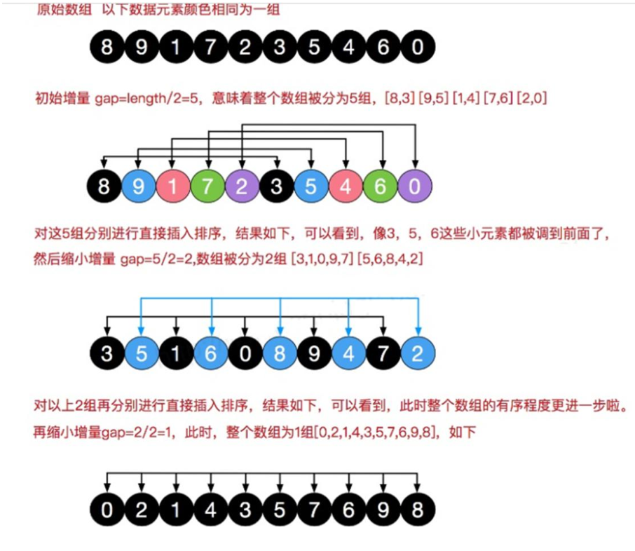
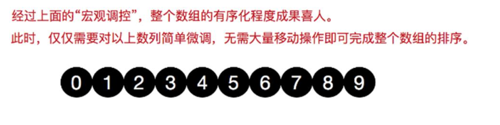

希尔排序法介绍
希尔排序是希尔（Donald Shell）于 1959 年提出的一种排序算法。希尔排序也是一种 插入排序，它是简单插入排序经过改进之后的一个 更高效的版本，也称为 缩小增量排序。
希尔排序法基本思想
希尔排序是把记录按下标的一定增量分组，对每组使用直接插入排序算法排序；随着增量逐渐减少，每组包含
的关键词越来越多， 当增量减至 1 时，整个文件恰被分成一组，算法便终止
希尔排序法的示意图


交换法实现
1
2
3
4
5
6
7
8
9
10
11
12
13
14
15
16
17
18
19
20
21
22
23
24
25
26
27
28
29
30
31
32
33
34
35
36
37
38
39
40
41
42
43
44
45
46
47
48
49
50
51
52
53
54
55
56
57
58
59
60
61
62
63
64
65
66
67
68
69
70
71
72
73
74
75
76
77
78
79
80
81
82
83
84
85
86
87
88
89
90
91
92
93
94
95
96
97
98
| public class ShellSort {
public static void main(String[] args) {
int[] arr = new int[80000];
for (int i = 0; i < 80000; i++) {
arr[i] = (int) (Math.random() * 8000000);
}
System.out.println("排序前");
Date data1 = new Date();
SimpleDateFormat simpleDateFormat = new SimpleDateFormat("yyyy-MM-dd HH:mm:ss");
String date1Str = simpleDateFormat.format(data1);
System.out.println("排序前的时间是=" + date1Str);
shellSort(arr);
Date data2 = new Date();
String date2Str = simpleDateFormat.format(data2);
System.out.println("排序前的时间是=" + date2Str);
}
public static void shellSort(int[] arr) {
int temp = 0;
int count = 0;
for (int gap = arr.length / 2; gap > 0; gap /= 2) {
for (int i = gap; i < arr.length; i++) {
for (int j = i - gap; j >= 0; j -= gap) {
if (arr[j] > arr[j + gap]) {
temp = arr[j];
arr[j] = arr[j + gap];
arr[j + gap] = temp;
}
}
}
}
}
}
|
80000个数据大概7秒
移位法实现
先分组再插入
1
2
3
4
5
6
7
8
9
10
11
12
13
14
15
16
17
18
19
20
21
22
23
24
25
26
27
28
29
30
31
32
33
34
35
36
37
38
39
40
41
42
43
44
45
46
47
48
|
public class ShellSort {
public static void main(String[] args) {
int[] arr = new int[80000];
for (int i = 0; i < 80000; i++) {
arr[i] = (int) (Math.random() * 8000000);
}
System.out.println("排序前");
Date data1 = new Date();
SimpleDateFormat simpleDateFormat = new SimpleDateFormat("yyyy-MM-dd HH:mm:ss");
String date1Str = simpleDateFormat.format(data1);
System.out.println("排序前的时间是=" + date1Str);
shellSort2(arr);
Date data2 = new Date();
String date2Str = simpleDateFormat.format(data2);
System.out.println("排序前的时间是=" + date2Str);
}
public static void shellSort2(int[] arr) {
for (int gap = arr.length / 2; gap > 0; gap /= 2) {
for (int i = gap; i < arr.length; i++) {
int j =i;
int temp = arr[j];
if (arr[j] < arr[j-gap]) {
while (j - gap >= 0 && temp < arr[j - gap]) {
arr[j] = arr[j-gap];
j-=gap;
}
arr[j] = temp;
}
}
}
}
}
|
80000个数据不到1秒 8000000个数据 2秒 ！！